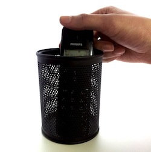

Prenez le contrôle de votre téléphone
Avec phoneWall, le téléphone sort enfin du 20ème siècle! Gagnez en productivité, réduisez votre TCO, gérez tous vos appels avec un service professionnel, adapté aux challenges des entreprises actuelles.
Essai gratuit

Filtrez les démarcheurs
Ne perdez plus de temps avec les démarcheurs: nous établissons une liste des indésirables et nous les filtrons pour vous.
Prenez soin de vos contacts
Vos contacts privilégiés ne passent pas par le standard, mais sont directement mis en relation avec la personne concernée, et évitent l'attente.
Vivez la mobilité
Recevez les appels des téléphones fixes sur votre smartphone, sans changement de numéro.